1.6 Правило Байеса та формула
повної ймовірності
Розглядаючи умовну ймовірність, ми
визначили, що, наприклад, ймовірність навмання витягти валет із колоди, яка
містить 52 карти, буде рівна
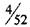
.
Така ймовірність називається
апріорною ймовірністю події.
Отже,
апріорна ймовірність - це ймовірність оцінки події до її появи, яка може
змінюватись після подальшого аналізу ситуації.
Розглянемо ймовірність,
яка знаходиться після того, як наслідки випробування
уже відомі. Таку ймовірність називають апостеріорною ймовірністю.
Нехай три
верстати
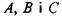
виробляють
деталі для двигунів.
Верстат А виробляє
45%, верстат В - 30%, а верстат С -25% деталей для
двигунів. Серед них 6% деталей, вироблених верстатом А не відповідають
встановленим стандартам якості, для верстатів
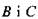
-
ці цифри 4% та 3%
відповідно. Навмання відібрали одну деталь і виявили, що
вона - дефектна. Яка ймовірність того, що відібрана деталь вироблена верстатом А?
Відповісти на це питання означає знайти
апостеріорну ймовірність події, що відібрана
деталь вироблена верстатом А.
Для початку, нехай
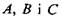
- це події, що деталі вироблені
верстатом А, верстатом В і верстатом С, відповідно. Цей експеримент
можна зобразити за допомогою діаграми Венна.
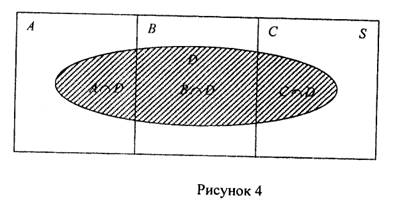
Три несумісні події А, В і С розбивають простір елементарних наслідків
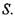
Подія
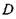
полягає в появі дефектної деталі в заштрихованій
області.
1. Подія
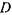
може
бути виражена як
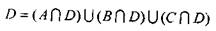
Тоді
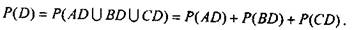
Події
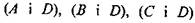
- залежні події. Тому,
використовуючи
правило множення, одержуємо формулу:
 (16)
(16)
Зауважимо, що формулу (16) називають
формулою повної ймовірності.
3.
Подія, яка полягає в появі дефектної
деталі за умови, що вона виготовлена верстатом А, виражається як

Отже, апостеріорна ймовірність, що дефектна деталь виготовлена верстатом А, дорівнює
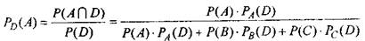
(17)
Формула (17)
відома як формула Байеса (правило Байеса). Імовірнісне дерево, що відповідає початковій умові задачі, представлено
Рис. 5.
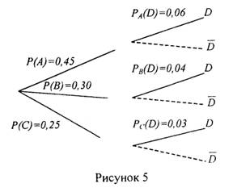
Ми можемо обчислити
потрібну ймовірність використовуючи наступне міркування (див. формулу (17),
рис. 5): чисельник визначається як здобуток
ймовірностей повздовж гілки
 , тоді як знаменник - сума добутків ймовірностей
повздовж кожної гілки (А-И).
, тоді як знаменник - сума добутків ймовірностей
повздовж кожної гілки (А-И).
Маємо
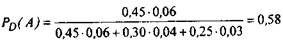
Розглянемо
загальну формулу правила Байеса. Нехай
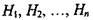
є розбиттям ймовірного простору 5 (тобто
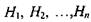
- несумісні події, такі що
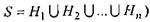
і нехай А - подія, що повністю містить результат експерименту
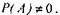
Тоді апостеріорна ймовірність
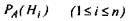
розглядається як
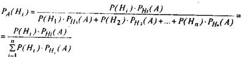
(18)
Приклад 11. Було проведено обстеження великого столичного району з
метою визначення величини щорічних доходів
сімейних пар, якщо працює тільки чоловік, а також тих сімей, де працюють і чоловік, і жінка. Результати обстеження представлені таблицею 2.
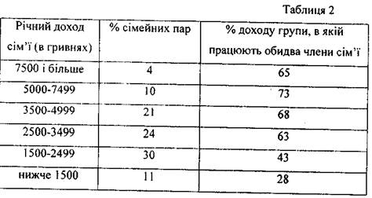
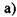
Яка
ймовірність, що пара, вибрана навмання в цьому районі,
має два доходи?
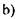
Якщо навмання вибрана пара має два доходи, то яка
ймовірність, що річний доход цієї
сімейної пари більший, ніж
7500грн.?
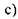
Якщо навмання вибрана пара має два доходи, то яка ймовірність, що річний
доход цієї пари більший, ніж 2499грн.?
Розв'язання. Позначимо
події
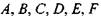
як:
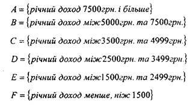
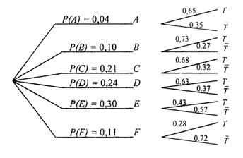
Рисунок 6 Нехай подія Т полягає в тому, що
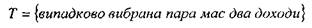
а) Ймовірність, що навмання вибрана пара має два доходи,
за формулою повної ймовірності дорівнює:
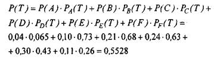
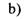
Використовуючи формулу Байеса,
знайдемо ймовірність того, що навмання вибрана пара
має річний доход більше 7500грн. за умови, що
обидва члени сім'ї працюють:
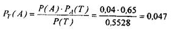
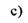
Ймовірність, що випадково вибрана пара має річний доход більше, ніж 2499грн. за умови, що обидва члени сім'ї працюють,
дорівнює
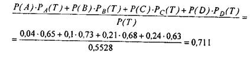